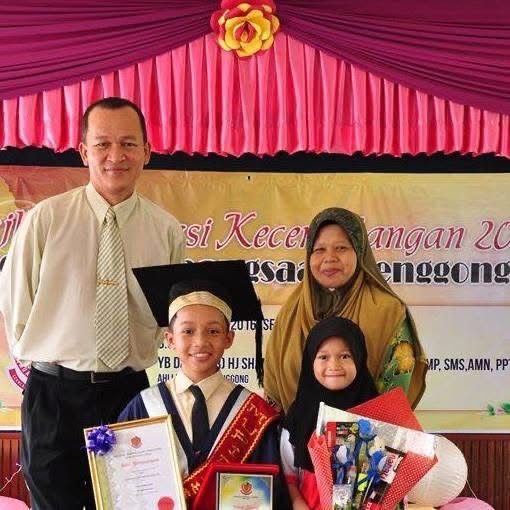
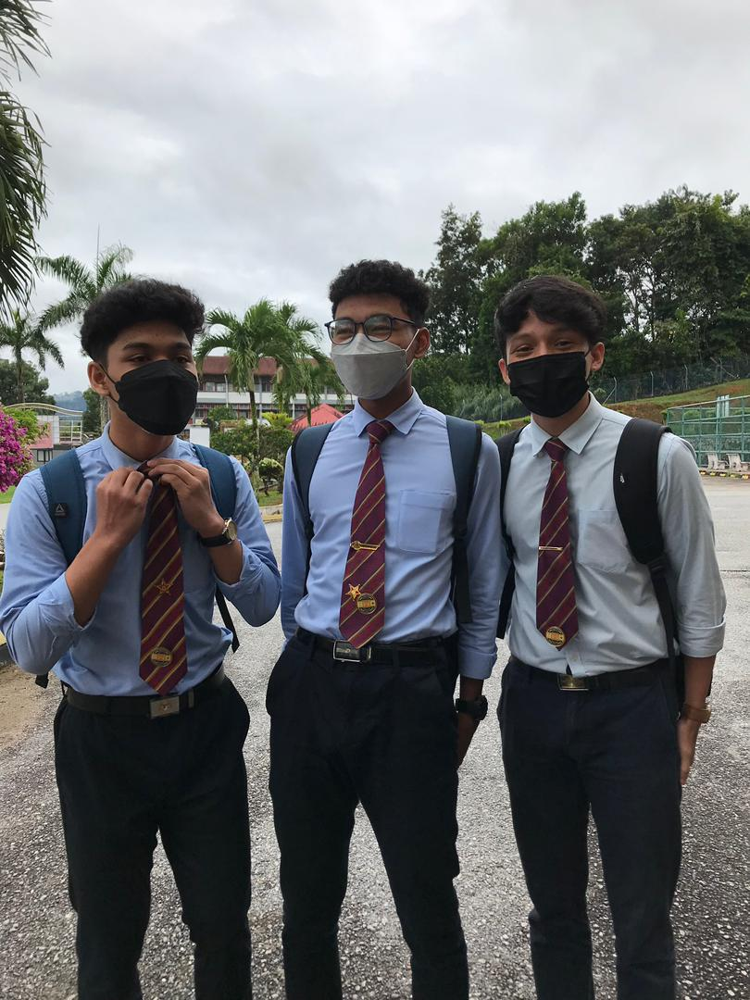
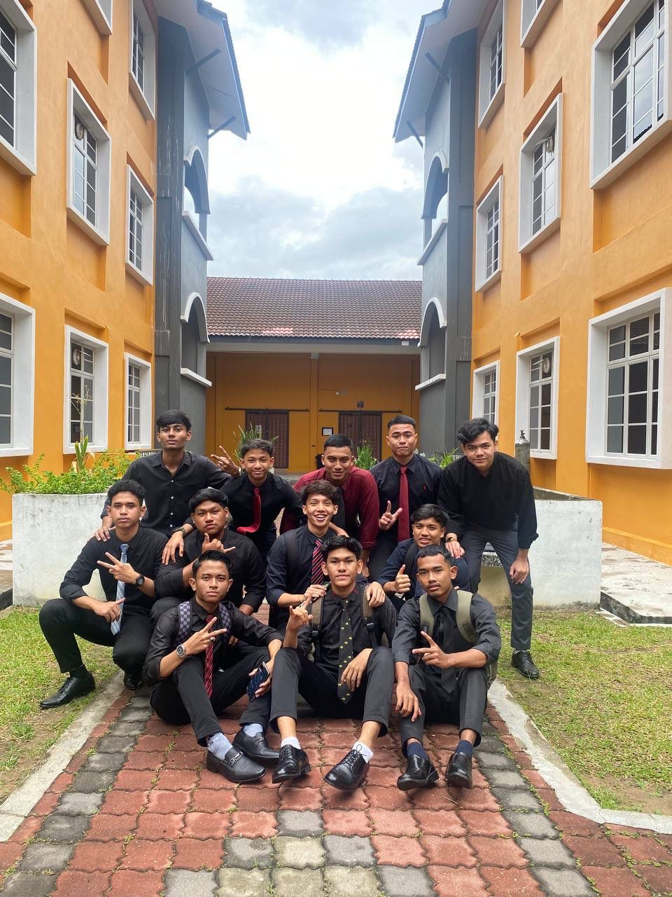

My Educational Journey
Explore the key milestones of my education and the experiences that shaped me into who I am today.
2008-2010 (Prasekolah SK Banggol Belimbing)
Achievement: Started my preschool since I was 4 years old
2011-2016 (SK Lenggong)
Achievement: 6A's in UPSR & Receive the 'Tokoh Murid Award'
2017-2022 (MRSM Gerik)
Achievement: Dean's award for 2 years (Form 2 and Form 5)

2022-Present (UiTM Kedah)
Achievement: Got second highest mark in my class for IMD236 subject

Gallery


